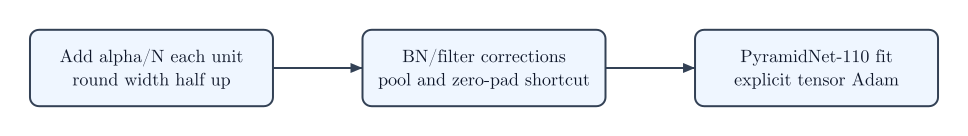
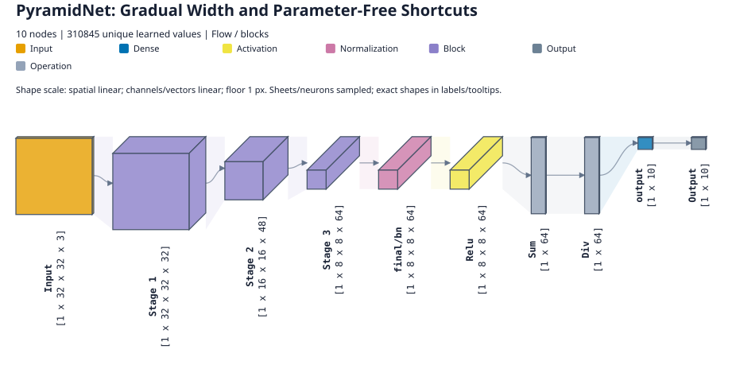
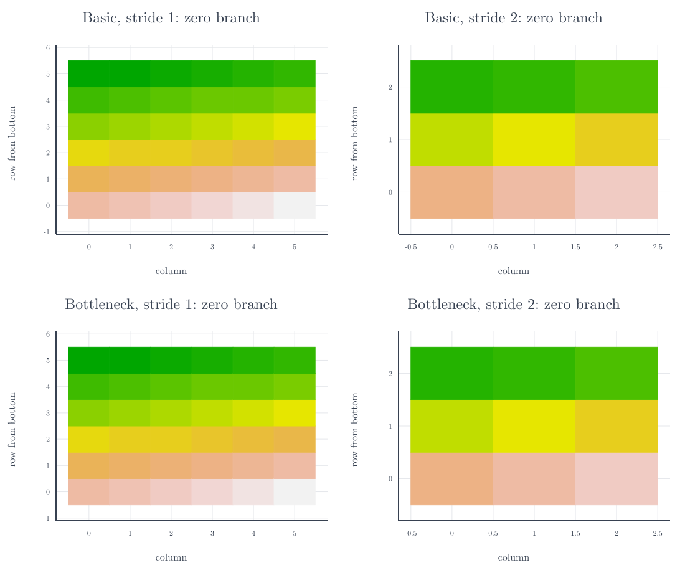
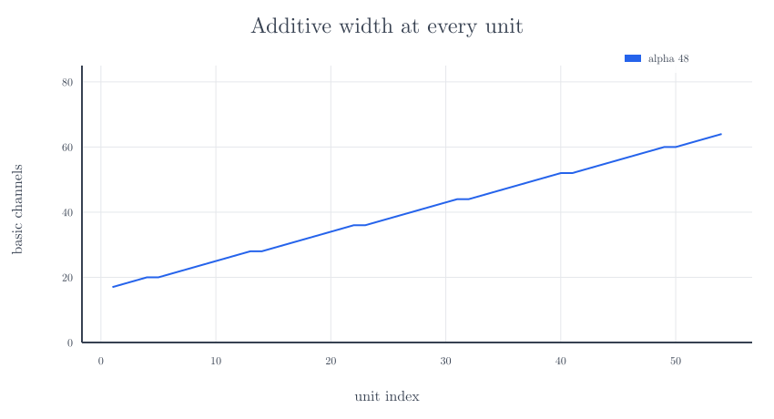
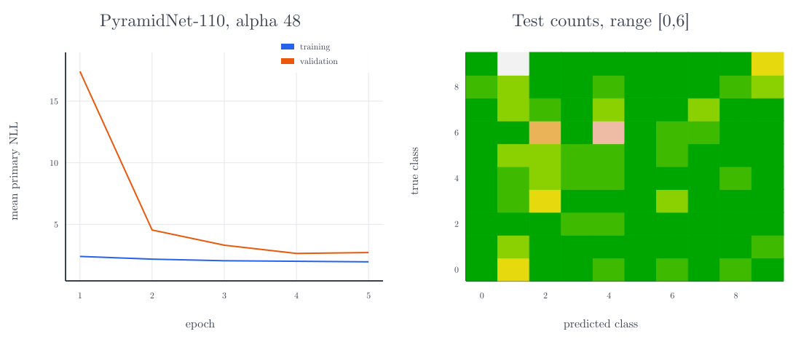
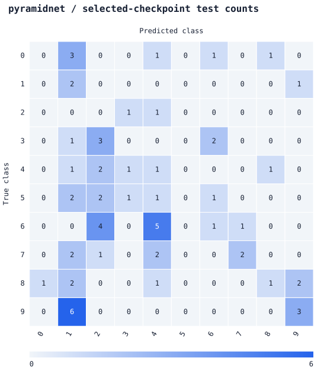

PyramidNet: Gradual Width and Parameter-Free Shortcuts
Abstract
PyramidNet widens at every residual unit rather than only at stage boundaries. We inspect the rounded additive schedule, signed pooled/zero-padded shortcuts, ten full architecture budgets and complete 272-layer gradients, then explicitly fit a full-depth CIFAR PyramidNet-110 with tensor Adam.
Source example: examples/cpp/source/nn/1_convolutional_neural_networks/1.3_residual_and_dense_families/pyramidnet.cpp.
The method
For N units, start running width at 16 for CIFAR or 64 for ImageNet, add alpha/N before each unit, then round half up. Basic units emit this width; bottlenecks emit four times it. The CIFAR-110 basic alpha-48 schedule has 54 units, beginning 17/18/19 and ending 64. Unlike doubling at stage boundaries, additive growth distributes width changes through depth.
Basic order is BN/conv/BN/ReLU/conv/BN; bottleneck order is BN/1×1/BN/ReLU/3×3/BN/ReLU/1×1/BN. The first BN has no ReLU and nothing gates the sum. Shortcuts have no parameters: stride-two averages nonoverlapping 2×2 windows, then appends zero channels. Even sides are required at downsampling to align this VALID pooling with branch geometry. A zero final BN yields the signed shortcut exactly, with weighted input derivatives matching independent strided sums (a 1/4 spread for pooled pixels).
The full CIFAR-110 alpha-48 basic model has 1772706 learned and 13168 moving scalars. CIFAR depths are 6n+2 basic or 9n+2 bottleneck; ImageNet uses four bottleneck stages, with depth 200 using 3/24/36/3 units. BN learns gamma/beta with epsilon 1e-5. CIFAR's stem is conv/BN without ReLU; ImageNet adds ReLU/pool. Both end in BN/ReLU, global mean and a linear classifier. He-uniform fan-in replaces the release's normal fan-out recipe. Paper parameter tables exclude BN scale/shift: subtracting the moving-state count removes exactly the same number of learned BN scalars. Count-only ImageNet forwards below use 64 pixels because parameter counts are independent of spatial dimensions.
A complete full-width PyramidNet-272 alpha-200 graph uses 90 bottlenecks and ends at 864 channels. The backward probe keeps every unit but uses 16-pixel synthetic inputs to bound activation storage. Some shifts have analytically zero gradients in training: the stem BN and each first/last unit BN shift add channel constants removed by a later BN. These 181 redundant directions are checked separately from other parameter derivatives; zero gradients there do not imply disconnected filters. Moving updates are disabled for the diagnostic.
The fit uses the upstream alpha-48 basic design at depth 110, with 18 units per stage, 1,772,706 learned scalars, and 13,168 moving scalars. It uses 128 fitting images, 64 validation images, and 64 official-test images. Five batch-eight epochs use Adam at 0.001, kernel L2, and independent padded crops and flips. Validation selects the checkpoint with the lowest NLL before the official-test subset is evaluated. The subset keeps the full-depth fit practical for the documentation.
The concept diagram below is drawn by dm::graphics::Diagram. Its editable C++
source is the complete block below; regeneration uses the same datamunge toolchain
as the numerical examples. Exports consume the saved local SVG.
#include <dm/dm.hpp>
int main() {
std::filesystem::create_directories("build");
dm::graphics::Diagram diagram;
diagram.node("n0", {0.0, 0}, "Add alpha/N each unit\nround width half up");
diagram.node("n1", {5.2, 0}, "BN/filter corrections\npool and zero-pad shortcut");
diagram.node("n2", {10.4, 0}, "PyramidNet-110 fit\nexplicit tensor Adam");
diagram.edge("n0", "n1").edge("n1", "n2");
diagram.save_svg("build/pyramidnet_concept.svg");
}
Executed tensor architecture
This figure executes the inference configuration shown in the code, using a zero-valued shape probe without fitting or loading a checkpoint. Named stage boundaries group whole subgraphs where available; other nodes retain functional-layer detail. Exact batch-inclusive shapes and reachable parameter totals come from the trace. Shared linear scales map spatial dimensions and channel counts to blocks; the one-pixel visibility floor is disclosed in the legend. Labels use compact monospace text, rotate counterclockwise and sit beside their own glyphs. Arrows flow left to right; wide diagrams scroll at native size on the website.
#include <dm/dm.hpp>
int main() {
namespace n = dm::nn;
namespace m = n::models;
n::set_num_threads(2);
std::filesystem::create_directories("build");
n::models::PyramidNetConfig cfg;
cfg.depth = 20;
n::ParameterStore p(17), state(17);
n::Module architecture_model(
[&](const n::Tensor& image) {
const auto out = n::models::PyramidNet(p, state, image, cfg, false);
auto previous = image;
for (std::size_t i = 0; i < out.stages.size(); ++i) {
n::model_stage("Stage " + std::to_string(i + 1), previous, out.stages[i]);
previous = out.stages[i];
}
return out.logits;
},
"PyramidNet: Gradual Width and Parameter-Free Shortcuts");
n::ModelPlotOptions options;
options.style = n::ModelPlotStyle::Flow;
options.detail = n::ModelPlotDetail::Blocks;
options.labels = {.type = n::ModelPlotLabel::NameAndShape, .size = 12, .wrap = 24};
options.spacing = {.layer = 24, .lane = 12, .label = 8, .margin = 20};
options.sizing.spatial_size = 96;
options.sizing.channel_size = 42;
options.sizing.minimum_extent = 1;
options.opacity = .8;
const auto diagram = architecture_model.plot(n::zeros({1, 32, 32, 3}), options);
diagram.save_svg("build/pyramidnet_architecture.svg");
std::print(
"{} displayed nodes; {} reachable learned values.\n",
diagram.nodes().size(),
diagram.parameter_count());
}10 displayed nodes; 310845 reachable learned values.

Simple shortcut example
Four cases isolate basic/bottleneck and stride-one/two behavior.
#include <dm/dm.hpp>
int main() {
namespace n = dm::nn;
const auto type = n::DType::Float64;
auto layout = dm::graphics::RLayout::create(2, 2);
for (bool bottle : {false, true})
for (int stride : {1, 2}) {
n::ParameterStore p(17, type), state(17, type);
const auto x =
n::linspace(-1, 1, 108, type).reshape({1, 6, 6, 3}).detach().requires_grad_();
const int planes = bottle ? 2 : 5, out = bottle ? 8 : 5, side = 6 / stride;
{
n::NoGradGuard guard;
n::models::PyramidBlock(p, state, "b", x, planes, bottle, stride);
}
const std::string last = bottle ? "b/bn4/" : "b/bn3/";
p.set(last + "gamma", n::zeros({out}, type));
p.set(last + "beta", n::zeros({out}, type));
const auto y = n::models::PyramidBlock(p, state, "b", x, planes, bottle, stride).output;
const auto weights =
n::linspace(.2, 1, side * side * out, type).reshape({1, side, side, out});
const auto dx = n::grad(n::sum(y * weights), {x})[0];
// Independent sum of strided slices, rather than calling the pooling helper.
auto mean = n::zeros({1, side, side, 3}, type);
for (int r = 0; r < stride; ++r)
for (int c = 0; c < stride; ++c)
mean = mean + n::slice_axis(n::slice_axis(x, 1, r, 6, stride), 2, c, 6, stride) /
double(stride * stride);
const auto expected = n::concat({mean, n::zeros({1, side, side, out - 3}, type)}, 3);
const auto reference = n::grad(n::sum(expected * weights), {x})[0];
if (n::max(n::abs(y - expected)).item() > 1e-12 ||
n::max(n::abs(dx - reference)).item() > 1e-12 || n::min(y).item() >= 0)
return 1;
auto first = n::slice_axis(y, 3, 0, 1).reshape({side, side});
layout.add(n::plot_tensor_map(first, -1, 1)
.title(std::string(bottle ? "Bottleneck" : "Basic") + ", stride " +
std::to_string(stride) + ": zero branch"));
std::print("{} stride {}: signed pooled/padded values and weighted input derivatives "
"match independent strided sums; {} output channels.\n",
bottle ? "bottleneck" : "basic", stride, out);
}
std::filesystem::create_directories("build");
layout.size(1100, 920).fit_panels().save_svg("build/pyramidnet_shortcuts.svg");
}basic stride 1: signed pooled/padded values and weighted input derivatives match independent strided sums; 5 output channels. basic stride 2: signed pooled/padded values and weighted input derivatives match independent strided sums; 5 output channels. bottleneck stride 1: signed pooled/padded values and weighted input derivatives match independent strided sums; 8 output channels. bottleneck stride 2: signed pooled/padded values and weighted input derivatives match independent strided sums; 8 output channels.

Complete schedules and derivatives
Count checks cover the original ten presets; the deepest backward probe explicitly checks redundant BN shifts.
#include <dm/dm.hpp>
int main() {
namespace n = dm::nn;
n::set_num_threads(2);
n::models::PyramidNetConfig cfg;
const auto widths = cfg.UnitWidths();
if (widths.size() != 54 || widths[0] != 17 || widths[1] != 18 || widths[2] != 19 ||
widths.back() != 64)
return 1;
auto plot = dm::graphics::RPlot::create();
std::vector<double> index, w;
for (size_t i = 0; i < widths.size(); ++i) {
index.push_back(i + 1);
w.push_back(widths[i]);
}
plot.lines(index, w, "alpha 48", {37, 99, 235})
.title("Additive width at every unit")
.x_label("unit index")
.y_label("basic channels")
.y_limits(0, 85);
std::filesystem::create_directories("build");
dm::graphics::RLayout::create(1, 1).add(plot).size(850, 460).fit_panels().save_svg(
"build/pyramidnet_widths.svg");
for (auto [depth, alpha, bottle, large, count, moving] :
std::vector<std::tuple<int, double, bool, bool, int64_t, int64_t>>{
{110, 48, false, false, 1772706, 13168},
{110, 84, false, false, 3904446, 19108},
{110, 270, false, false, 28485477, 49798},
{164, 48, true, false, 1715442, 43744},
{164, 270, true, false, 27216021, 165844},
{200, 240, true, false, 26752702, 181984},
{236, 220, true, false, 26969046, 198824},
{272, 200, true, false, 26210842, 210864},
{200, 300, true, true, 62368168, 285736},
{200, 450, true, true, 116775213, 386236}}) {
n::NoGradGuard guard;
n::ParameterStore p(17), state(17);
n::models::PyramidNetConfig c;
c.depth = depth;
c.alpha = alpha;
c.bottleneck = bottle;
c.imagenet = large;
c.classes = large ? 1000 : 10;
const int side = large ? 64 : 32;
const auto out = n::models::PyramidNet(p, state, n::zeros({1, side, side, 3}), c);
if (p.count() != count || state.count() != moving ||
out.logits.shape() != n::Shape{1, c.classes})
return 1;
std::print("{} PyramidNet-{}, alpha {}, {}: {} learned / {} moving scalars; excluding BN "
"scale/shift {:.3f} million.\n",
large ? "ImageNet" : "CIFAR", depth, alpha, bottle ? "bottleneck" : "basic",
count, moving, double(count - moving) / 1e6);
}
n::ParameterStore p(17), state(17);
n::Generator rng(29);
cfg.depth = 272;
cfg.alpha = 200;
cfg.bottleneck = true;
cfg.update_stats = false;
const auto net =
n::models::PyramidNet(p, state, n::normal({2, 16, 16, 3}, 0, .2, rng), cfg, true);
if (net.channels.back() != 864 || net.blocks.size() != 90)
return 1;
for (int i = 0; i < 3; ++i)
if (net.stages[i].shape() !=
n::Shape{2, 16 / (1 << i), 16 / (1 << i), net.channels[(i + 1) * 30 - 1]})
return 1;
const auto gradients = n::grad(n::mean(n::square(net.logits)), p.parameters());
double largest = 0, redundant = 0, minimum = std::numeric_limits<double>::infinity();
int count = 0;
for (size_t i = 0; i < gradients.size(); ++i) {
const double norm = n::sqrt(n::sum(n::square(gradients[i]))).item();
if (!std::isfinite(norm))
return 1;
largest = std::max(largest, norm);
const auto name = p.names()[i];
if (name == "stem/bn/beta" || name.ends_with("/bn1/beta") || name.ends_with("/bn4/beta")) {
++count;
redundant = std::max(redundant, norm);
} else
minimum = std::min(minimum, norm);
}
if (count != 181 || redundant > 1e-5 * largest || minimum <= 0)
return 1;
std::print("Full-width/depth PyramidNet-272 alpha 200 backward: {} finite parameter-tensor "
"gradients; {} analytically redundant BN shifts, max norm {:.9f}; other minimum "
"{:.9f}, overall maximum {:.9f}.\n",
gradients.size(), count, redundant, minimum, largest);
}CIFAR PyramidNet-110, alpha 48, basic: 1772706 learned / 13168 moving scalars; excluding BN scale/shift 1.760 million. CIFAR PyramidNet-110, alpha 84, basic: 3904446 learned / 19108 moving scalars; excluding BN scale/shift 3.885 million. CIFAR PyramidNet-110, alpha 270, basic: 28485477 learned / 49798 moving scalars; excluding BN scale/shift 28.436 million. CIFAR PyramidNet-164, alpha 48, bottleneck: 1715442 learned / 43744 moving scalars; excluding BN scale/shift 1.672 million. CIFAR PyramidNet-164, alpha 270, bottleneck: 27216021 learned / 165844 moving scalars; excluding BN scale/shift 27.050 million. CIFAR PyramidNet-200, alpha 240, bottleneck: 26752702 learned / 181984 moving scalars; excluding BN scale/shift 26.571 million. CIFAR PyramidNet-236, alpha 220, bottleneck: 26969046 learned / 198824 moving scalars; excluding BN scale/shift 26.770 million. CIFAR PyramidNet-272, alpha 200, bottleneck: 26210842 learned / 210864 moving scalars; excluding BN scale/shift 26.000 million. ImageNet PyramidNet-200, alpha 300, bottleneck: 62368168 learned / 285736 moving scalars; excluding BN scale/shift 62.082 million. ImageNet PyramidNet-200, alpha 450, bottleneck: 116775213 learned / 386236 moving scalars; excluding BN scale/shift 116.389 million. Full-width/depth PyramidNet-272 alpha 200 backward: 997 finite parameter-tensor gradients; 181 analytically redundant BN shifts, max norm 0.000000508; other minimum 0.005257340, overall maximum 51.072830200.

Dataset and explicit fitting
Original CIFAR images precede the complete fitting loop.
#include <dm/dm.hpp>
int main() {
namespace n = dm::nn;
std::filesystem::path cache;
if (const auto *p = std::getenv("DATAMUNGE_DATA_DIR"))
cache = p;
else if (const auto *p = std::getenv("XDG_CACHE_HOME"))
cache = std::filesystem::path(p) / "datamunge/datasets";
else
cache = std::filesystem::path(std::getenv("HOME")) / ".cache/datamunge/datasets";
dm::datasets::fetch("cifar10", (cache / "cifar10").string());
const auto raw =
n::data::LoadCifar({cache / "cifar10/data_batch_1.bin"}, n::data::Cifar::k10);
const auto images = n::cast(raw.images, n::DType::Float32) / 255.;
const auto labels = raw.labels;
std::vector<int64_t> rows;
for (int cls = 0; cls < 10; ++cls) {
for (int64_t row = 0; row < labels.numel(); ++row)
if (labels.at({row}) == cls) {
rows.push_back(row);
break;
}
}
if (rows.size() != 10)
return 1;
std::filesystem::create_directories("build");
n::save_image_grid(n::take_rows(images, rows), "build/pyramidnet_inputs.png", 5, 0., 1., 4,
1., 4);
std::print("One original cached training image per class, IDs 0..4 then 5..9.\n");
}One original cached training image per class, IDs 0..4 then 5..9.

#include <dm/dm.hpp>
int main() {
int rendered_confusions = 0;
namespace n = dm::nn;
n::set_num_threads(2);
std::filesystem::path cache;
if (const auto* p = std::getenv("DATAMUNGE_DATA_DIR"))
cache = p;
else if (const auto* p = std::getenv("XDG_CACHE_HOME"))
cache = std::filesystem::path(p) / "datamunge/datasets";
else
cache = std::filesystem::path(std::getenv("HOME")) / ".cache/datamunge/datasets";
dm::datasets::fetch("cifar10", (cache / "cifar10").string());
const auto raw = n::data::LoadCifar({cache / "cifar10/data_batch_1.bin"}, n::data::Cifar::k10);
const auto images = n::cast(raw.images, n::DType::Float32) / 255.,
labels = n::cast(raw.labels, n::DType::Int64);
const auto tx = n::slice_axis(images, 0, 0, 128), ty = n::slice_axis(labels, 0, 0, 128);
const auto vx = 2 * n::slice_axis(images, 0, 128, 192) - 1,
vy = n::slice_axis(labels, 0, 128, 192);
const auto official = n::load_cifar10((cache / "cifar10").string(), "test");
const auto qx = 2 * n::slice_axis(official.images, 0, 0, 64) - 1,
qy = n::slice_axis(official.labels, 0, 0, 64);
n::models::PyramidNetConfig cfg;
cfg.depth = 110;
cfg.alpha = 48;
n::ParameterStore p(17), state(17);
auto output = [&](const n::Tensor& image, bool training) {
return n::models::PyramidNet(p, state, image, cfg, training).logits;
};
{
n::NoGradGuard guard;
output(n::zeros({1, 32, 32, 3}), false);
}
if (p.count() != 1772706 || state.count() != 13168)
return 1;
n::OptimizerConfig config;
config.kind = n::OptimizerKind::Adam;
n::Optimizer optimizer(p, .001, config);
n::BatchOrder batches(128, 8, 2026);
n::Generator augmentation(151);
std::filesystem::create_directories("build");
const std::string checkpoint = "build/pyramidnet_best";
double best = std::numeric_limits<double>::infinity();
int best_epoch = 0;
std::vector<double> epochs, train, validation;
for (int epoch = 1; epoch <= 5; ++epoch) {
batches.begin_epoch();
n::WeightedMean average;
for (auto rows = batches.next(); !rows.empty(); rows = batches.next()) {
const auto batch = n::take_rows(tx, rows), target = n::take_rows(ty, rows);
std::vector<n::Tensor> transformed;
for (int64_t row = 0; row < batch.size(0); ++row) {
auto image =
n::pad(n::slice_axis(batch, 0, row, row + 1), {{0, 0}, {4, 4}, {4, 4}, {0, 0}});
image = n::augment::random_crop(image, 32, 32, augmentation);
transformed.push_back(n::augment::random_flip_left_right(image, augmentation));
}
const auto nll =
n::sparse_softmax_cross_entropy(output(2 * n::concat(transformed, 0) - 1, true), target);
auto objective = nll;
for (const auto& w : p.parameters())
if (w.dim() >= 2)
objective = objective + .00005 * n::sum(n::square(w));
optimizer.minimize(objective);
average.add(nll.item(), rows.size());
}
n::NoGradGuard guard;
const double val = n::sparse_softmax_cross_entropy(output(vx, false), vy).item();
if (!std::isfinite(val))
return 1;
epochs.push_back(epoch);
train.push_back(average.value());
validation.push_back(val);
if (val < best) {
best = val;
best_epoch = epoch;
p.save(checkpoint + "_params.npz");
state.save(checkpoint + "_state.npz");
}
}
p.load(checkpoint + "_params.npz");
state.load(checkpoint + "_state.npz");
n::NoGradGuard guard;
const auto prediction = output(qx, false);
const double test_nll = n::sparse_softmax_cross_entropy(prediction, qy).item();
const double training_nll = n::sparse_softmax_cross_entropy(output(2 * tx - 1, false), ty).item();
if (!std::isfinite(test_nll))
return 1;
const auto truth = n::one_hot(qy, 10), predicted = n::one_hot(n::argmax(prediction, 1), 10);
const auto confusion = n::matmul(n::transpose(truth, {1, 0}), predicted);
n::save_npz("build/pyramidnet_heldout_"+std::to_string(rendered_confusions)+".npz",{{"truth",qy},{"logits",prediction},{"counts",confusion.to(n::DType::Int64)}});
n::ConfusionMatrix::from_counts(confusion.to(n::DType::Int64))
.save_svg(
"build/pyramidnet_confusion_api_" + std::to_string(rendered_confusions++) + ".svg",
{.title = "pyramidnet / selected-checkpoint test counts"});
if (n::sum(confusion).item() != 64)
return 1;
auto trace = dm::graphics::RPlot::create();
trace.lines(epochs, train, "training", {37, 99, 235})
.lines(epochs, validation, "validation", {234, 88, 12})
.title("PyramidNet-110, alpha 48")
.x_label("epoch")
.y_label("mean primary NLL");
// Flip before the image helper so its vertical tick is the actual true-class ID.
auto counts = n::plot_tensor_map(n::reverse(confusion, {0}), 0, n::max(confusion).item());
counts
.title(
"Test counts, range [0," + std::to_string(static_cast<int>(n::max(confusion).item())) +
"]")
.x_label("predicted class")
.y_label("true class")
.x_limits(-.5, 9.5)
.y_limits(-.5, 9.5);
dm::graphics::RLayout::create(1, 2).add(trace).add(counts).size(1100, 470).fit_panels().save_svg(
"build/pyramidnet_training.svg");
std::print(
"128 fit / 64 validation / 64 official-test rows; {} learned scalars, {} moving "
"scalars; {} explicit Adam updates.\nSelected epoch {}; validation NLL {:.6f}; "
"inference training NLL {:.6f}; test NLL {:.6f}; test accuracy {:.6f}.\n",
p.count(),
state.count(),
optimizer.iterations(),
best_epoch,
best,
training_nll,
test_nll,
n::accuracy(prediction, qy));
}128 fit / 64 validation / 64 official-test rows; 1772706 learned scalars, 13168 moving scalars; 80 explicit Adam updates. Selected epoch 4; validation NLL 2.636361; inference training NLL 1.803488; test NLL 2.500207; test accuracy 0.156250.

The executed results above report the current selected checkpoint. These fixed small subsets and source budgets do not establish a ranking of architectures. Assess training, validation and test NLL together with the complete held-out confusion. Augmented or batch-moment training objectives and saved-state inference can differ; weak or below-chance outcomes remain part of the result. The independent geometry, parameter-count and derivative checks establish separate implementation claims.
Native confusion matrices
These matrices use the held-out predictions from the executed program above.
The native ConfusionMatrix SVG API labels exact counts with true classes
running from top to bottom and predicted classes from left to right.

Regenerate every adjacent view
Each alternate architecture or held-out confusion below is copied from this run's local build directory.
#include <dm/dm.hpp>
int main(){std::filesystem::create_directories("build");std::filesystem::copy_file("build/pyramidnet_confusion_api_0.svg","build/export_pyramidnet_confusion_api_0.svg",std::filesystem::copy_options::overwrite_existing);}Conclusion
Gradual widening changes every unit's budget, while parameter-free shortcuts preserve signed signals through pooling and zero extension. Explicit geometry, gradient and optimization checks show how that design behaves in a complete tensor classifier.
References
- [Han et al. (2017), Deep Pyramidal Residual Networks](https://arxiv.org/abs/1610.02915).
- [Authors' implementation](https://github.com/jhkim89/PyramidNet/blob/master/addpyramidnet.lua).
- [CIFAR-10 dataset](https://www.cs.toronto.edu/~kriz/cifar.html).